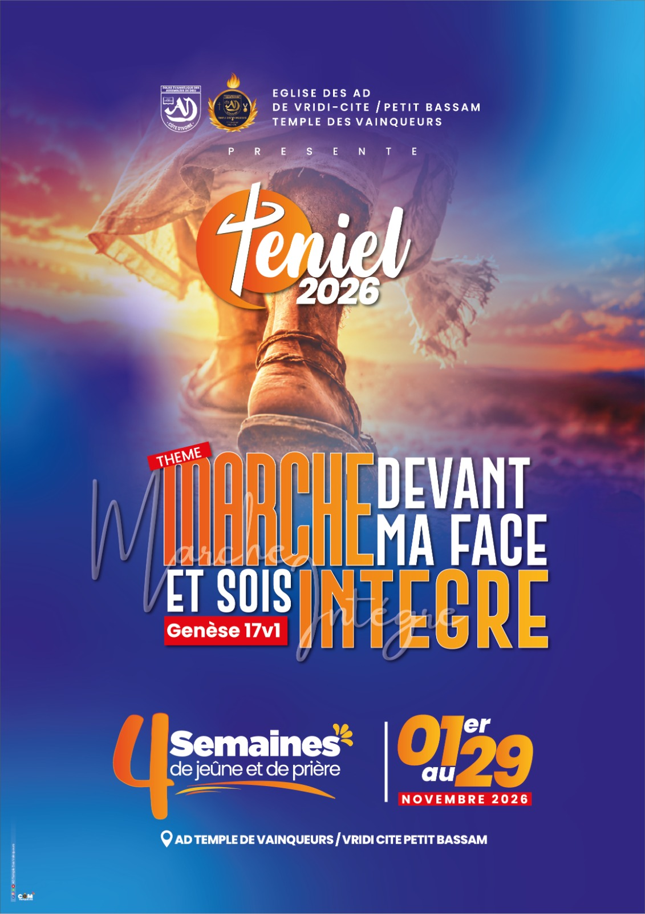

Temple des Vainqueurs présente
Lancement samedi 31 octobre4Semainesde jeûne et de prière
01au29Novembre 2026
www.advainqueurs.org
Assemblées de Dieu · Abidjan
Vridi, Port-Bouët — cultes, prédications
et vie d'église chaque semaine.
www.advainqueurs.org